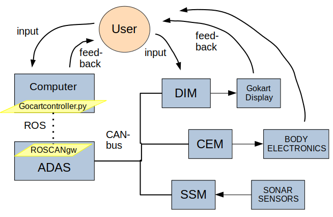
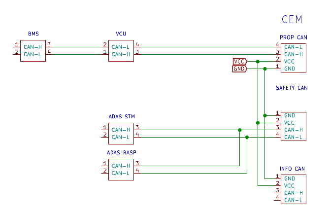
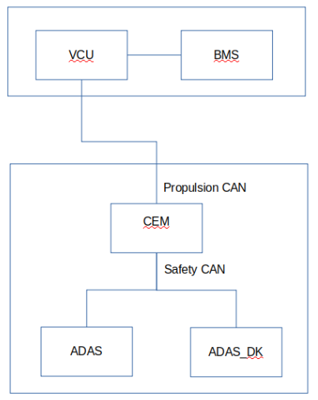
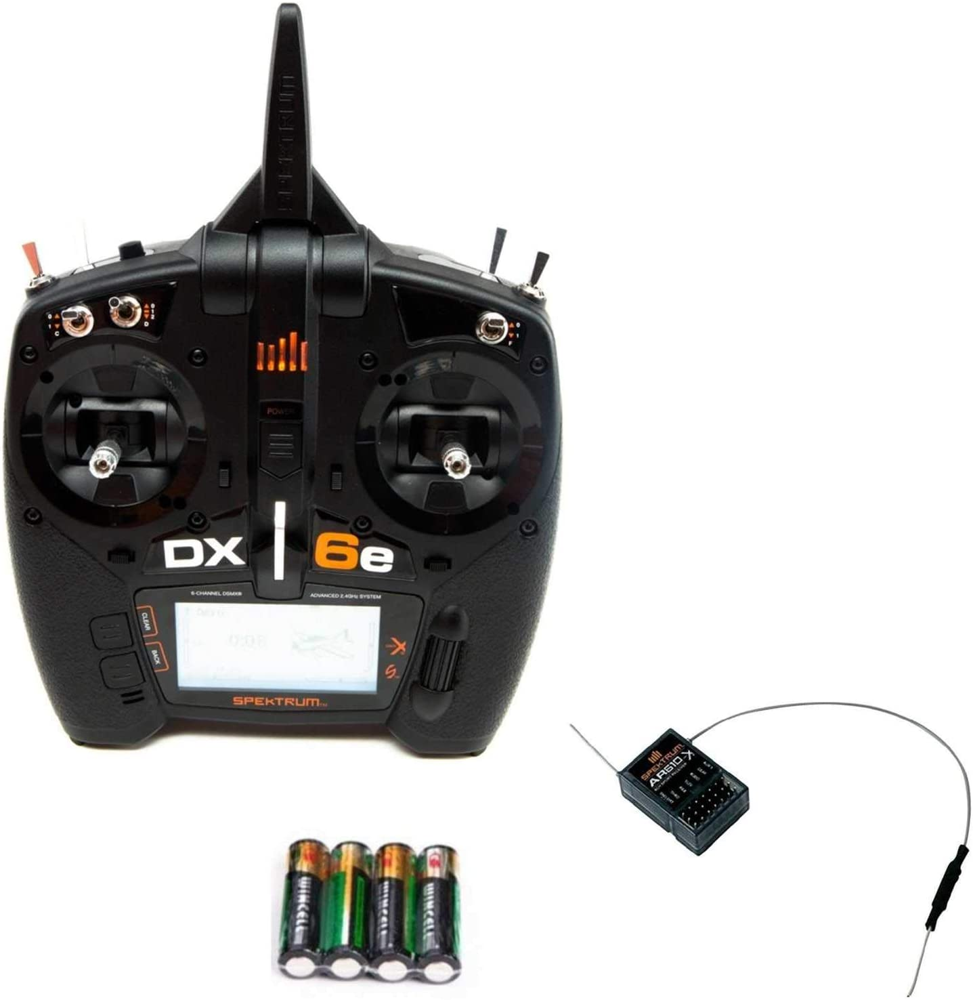
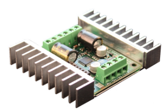
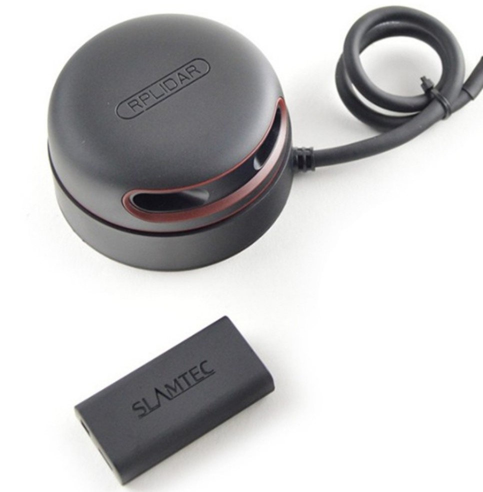
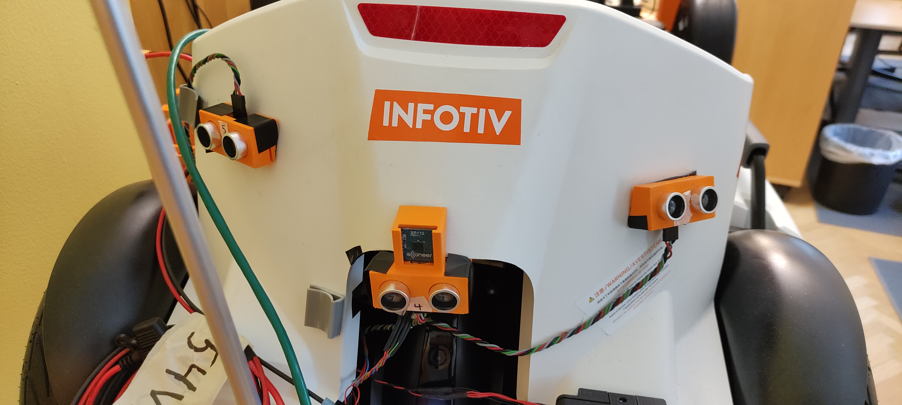
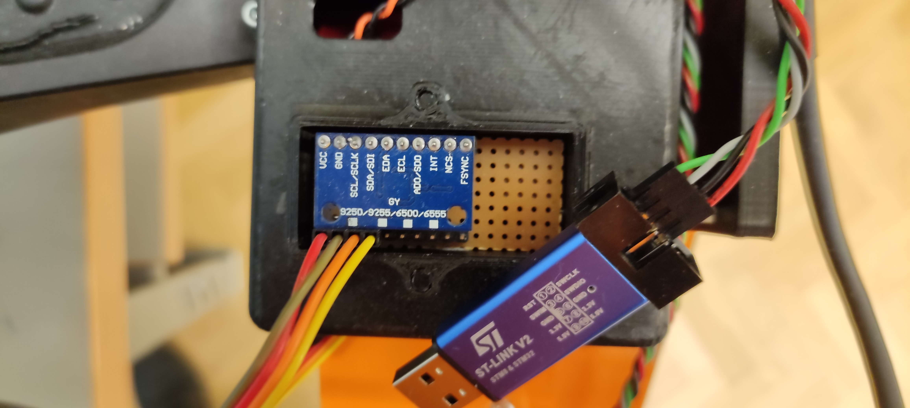
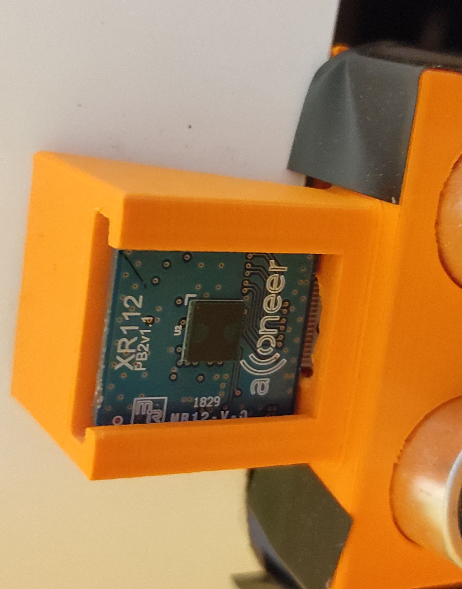

Interfaces and Sensors¶
There are several sensor installed on Infotiv Autonomous Platform
- Camera (Raspberry Pi Camera V2 Video Module )
- Ultrasonic (Ultrasonic Sensor HC-SR04)
- Lidar (RPLidar A2M6)
- Radar (XR112 RADAR SENSOR MODULE W/FLEX CABLE)
- Wheel speed sensors (Rpm sensors)
- Sonar sensors
- IMU
Robot Operating System (ROS)¶
The user interfaces with ADAS through the terminal of a Linux-computer running ROS (Robot Operating System). A python-script on the computer calls ROS methods to publish and subscribe to ”topics”. On ADAS a CAN-gateway is running that converts ROS-topics into CAN-messages and vice versa. The computer connects to ADAS via wifi. By setting the data of a ROS-topic that corresponds to a CAN-message sent out by ADAS, the user can control other units that listens to the CAN-message. The CEM unit receives CAN-messages from ADAS requesting changes in Body Electronics (headlight, taillight, blinkers, horn, moodlight) behaviour. Depending on the state of the Power Mode, the changes are performed or denied.

Requests to change the Power Mode can come from ADAS, or from a physical interface with buttons and a screen on the Gokart. This ECU, named DIM, sends CAN-messages requesting Power Mode changes, and receives CAN-messages from CEM with the updated Power Mode State. The screen shows the updated Power Mode State. The user can also subscribe to topics corresponding to CAN-messages received on ADAS. Part of the Body Electronics Intern Package is the Sonar Sensors Module (SSM) which is hosting six Sonar sensors that put out distance data. SSM converts the data to CAN-messages, which are transmitted to the bus and received by ADAS. Using the python script or the rostopic echo method on the computer, the user can monitor the sonar distance data in real time.
Can publisher http://dobby.local:35991
Version: melodic Installing ROS
ROS topics¶
rostopic list
/A2/scan
/Acc_X
/Acc_Y
/Acc_Z
/Blinker_ADAS_Request
/Blinker_TEM_Request
/Brakelight_ADAS_Request
/Brakelight_TEM_Request
/Brakelight_VCU_Request
/Car_Speed
/Car_TurnRate
/Car_brake
/Filler
/Gyro_X
/Gyro_Y
/Gyro_Z
/Headlight_ADAS_request
/Headlight_TEM_Request
/HeartBeat_ADAS_Counter
/HeartBeat_ADAS_DK_Counter
/HeartBeat_ADAS_DK_health
/HeartBeat_ADAS_health
/HeartBeat_BMS_Counter
/HeartBeat_BMS_health
/HeartBeat_CEM_Counter
/HeartBeat_CEM_health
/HeartBeat_TEM_Counter
/HeartBeat_TEM_health
/HeartBeat_VCU_Counter
/HeartBeat_VCU_health
/Horn_ADAS_Request
/Horn_TEM_Request
/Mag_X
/Mag_Y
/Mag_Z
/Moodlight_request_ADAS
/Moodlight_request_TEM
/Motor_current
/Name
/Pose_Azimuth
/Pose_Heading
/Pose_Roll
/Power_Enable_channel_1
/Power_Enable_channel_2
/Power_Enable_channel_3
/Power_Enable_channel_4
/Power_Mode_Key_state
/Power_Mode_Request_ADAS
/Power_Mode_Request_CEM_dk
/Power_Mode_Status
/Power_Mode_UB
/Power_Status_channel_1
/Power_Status_channel_2
/Power_Status_channel_3
/Power_Status_channel_4
/Prop_voltage_cell_1
/Prop_voltage_cell_2
/Prop_voltage_cell_3
/Prop_voltage_cell_4
/S1/scan
/Sonar1_Reading
/Sonar2_Reading
/Sonar3_Reading
/Sonar4_Reading
/Sonar5_Reading
/Sonar6_Reading
/Speed_Request_Speed
/Speed_Request_Turn
/Speed_request_brake
/Systems_voltage_cell_1
/Systems_voltage_cell_2
/Wheel_Speed_FL
/Wheel_Speed_FR
/Wheel_Speed_RL
/Wheel_Speed_RR
/Wheel_Torque_Left
/Wheel_Torque_Right
/imu
/prop_voltage_total
/rosout
/rosout_agg
/systems_voltage_total
/usb_cam/camera_info
/usb_cam/image_color
/usb_cam/image_color/compressed
/usb_cam/image_color/compressed/parameter_descriptions
/usb_cam/image_color/compressed/parameter_updates
/usb_cam/image_mono
/usb_cam/image_mono/compressed
/usb_cam/image_mono/compressed/parameter_descriptions
/usb_cam/image_mono/compressed/parameter_updates
/usb_cam/image_proc_debayer/parameter_descriptions
/usb_cam/image_proc_debayer/parameter_updates
/usb_cam/image_proc_rectify_color/parameter_descriptions
/usb_cam/image_proc_rectify_color/parameter_updates
/usb_cam/image_proc_rectify_mono/parameter_descriptions
/usb_cam/image_proc_rectify_mono/parameter_updates
/usb_cam/image_raw
/usb_cam/image_raw/compressed
/usb_cam/image_raw/compressed/parameter_descriptions
/usb_cam/image_raw/compressed/parameter_updates
/usb_cam/image_rect
/usb_cam/image_rect/compressed
/usb_cam/image_rect/compressed/parameter_descriptions
/usb_cam/image_rect/compressed/parameter_updates
/usb_cam/image_rect_color
/usb_cam/image_rect_color/compressed
/usb_cam/image_rect_color/compressed/parameter_descriptions
/usb_cam/image_rect_color/compressed/parameter_updates
Steering¶
# turn left
export ROS_MASTER_URI=http://192.168.150.120:11311
export ROS_IP=192.168.150.107
source /opt/ros/noetic/setup.bash
rostopic pub /Speed_Request_Turn std_msgs/Float32 10
# middle
rostopic pub /Speed_Request_Turn std_msgs/Float32 0
# right NOT WORKING
rostopic pub /Speed_Request_Turn std_msgs/Float32 '{data: -1.0}'
Throttle¶
rostopic pub Speed_Request_Speed std_msgs/Float32 100
rostopic pub Speed_Request_Speed std_msgs/Float32 100
rostopic pub Speed_Request_Speed std_msgs/Float32 255
Headlight¶
rostopic pub Headlight_ADAS_request std_msgs/Float32 255
rostopic pub Headlight_ADAS_request std_msgs/Float32 55
rostopic pub Headlight_ADAS_request std_msgs/Float32 1
rostopic pub Headlight_ADAS_request std_msgs/Float32 12
rostopic pub ADAS_Blinker_Request std_msgs/Float32 100
Reading Different Parameters¶
rostopic echo /Wheel_Speed_FL
rostopic echo /Sonar3_Reading
rostopic echo /Acc_X
rostopic echo /Mag_Z
rostopic echo /Gyro_X
rostopic echo /Gyro_Y
rostopic echo /Gyro_Z
rostopic echo /Wheel_Torque_Left
reading IMU¶
rostopic echo /imu
---
header:
seq: 164533
stamp:
secs: 1654607443
nsecs: 893239650
frame_id: "imu_link"
orientation:
x: 0.0
y: 0.0
z: 0.0
w: 0.0
orientation_covariance: [-1.0, 0.0, 0.0, 0.0, 0.0, 0.0, 0.0, 0.0, 0.0]
angular_velocity:
x: 0.00159784952799
y: 0.0186415778266
z: 0.00133154127333
angular_velocity_covariance: [0.0, 0.0, 0.0, 0.0, 0.0, 0.0, 0.0, 0.0, 0.0]
linear_acceleration:
x: -0.372805164196
y: -0.958384979982
z: -9.34410371352
linear_acceleration_covariance: [0.0, 0.0, 0.0, 0.0, 0.0, 0.0, 0.0, 0.0, 0.0]
CAN¶
A Controller Area Network (CAN bus) is a robust vehicle bus standard designed to allow microcontrollers and devices to communicate with each other's applications without a host computer. It is a message-based protocol, designed originally for multiplex electrical wiring within automobiles to save on copper, but it can also be used in many other contexts. For each device, the data in a frame is transmitted sequentially but in such a way that if more than one device transmits at the same time, the highest priority device can continue while the others back off. Frames are received by all devices, including by the transmitting device.
See signal detailed information /Signals (Protected document)
 
Propulsion Frames¶
| Name | Signals | DLC | ID | Source Module | Period |
|---|---|---|---|---|---|
| Wheel Speeds | 1 | 8 | 0x01 | VCU | 0.01 |
| Wheel Speeds | 2 | 8 | 0x01 | VCU | 0.01 |
| Wheel Speeds | 3 | 8 | 0x01 | VCU | 0.01 |
| Wheel Speeds | 4 | 8 | 0x01 | VCU | 0.01 |
| Motor VI | 5 | 4 | 0x02 | BMS | 0.01 |
| Motor VI | 46 | 4 | 0x02 | BMS | 0.01 |
| Power Status | 10 | 1 | 0x03 | BMS | 0.1 |
| Power Status | 11 | 1 | 0x03 | BMS | 0.1 |
| Power Status | 12 | 1 | 0x03 | BMS | 0.1 |
Infotainment Frames¶
| Name | Signals | DLC | ID | Source Module | Period |
|---|---|---|---|---|---|
| Wheel Speeds | 1 | 8 | 0x01 | CEM | 0.01 |
| Wheel Speeds | 2 | 8 | 0x01 | CEM | 0.01 |
| Wheel Speeds | 3 | 8 | 0x01 | CEM | 0.01 |
| Wheel Speeds | 4 | 8 | 0x01 | CEM | 0.01 |
| Motor VI | 5 | 4 | 0x02 | CEM | 0.01 |
| Motor VI | 46 | 4 | 0x02 | CEM | 0.01 |
| Power Status | 10 | 1 | 0x03 | CEM | 0.01 |
| Power Status | 11 | 1 | 0x03 | CEM | 0.01 |
| Power Status | 12 | 1 | 0x03 | CEM | 0.01 |
Safety Frames¶
| Name | Signals | DLC | ID | Source Module | Period |
|---|---|---|---|---|---|
| Wheel Speeds | 1 | 8 | 0x01 | CEM | 0.01 |
| Wheel Speeds | 2 | 8 | 0x01 | CEM | 0.01 |
| Wheel Speeds | 3 | 8 | 0x01 | CEM | 0.01 |
| Wheel Speeds | 4 | 8 | 0x01 | CEM | 0.01 |
| Motor VI | 5 | 4 | 0x02 | CEM | 0.01 |
| Motor VI | 46 | 4 | 0x02 | CEM | 0.01 |
| Power Status | 10 | 1 | 0x03 | CEM | 0.01 |
| Power Status | 11 | 1 | 0x03 | CEM | 0.01 |
| Power Status | 12 | 1 | 0x03 | CEM | 0.01 |
Current Signals¶
| Signal Index | Signal Name | Source | Source update period | Source Bus | Gate to Prop | Gate to safety | Gate to Info | Data type | length |
|---|---|---|---|---|---|---|---|---|---|
| 1 | Wheel Speed_FR | VCU | 0.01 | Prop | x | x | Unsigned | 16 | |
| 2 | Wheel Speed_FL | VCU | 0.01 | Prop | x | x | Unsigned | 16 | |
| 3 | Wheel Speed_RR | VCU | 0.01 | Prop | x | x | Unsigned | 16 | |
| 4 | Wheel Speed_RL | VCU | 0.01 | Prop | x | x | Unsigned | 16 | |
| 5 | Motor current | BMS | Prop | x | Unsigned | 16 | |||
| 6 | Power Enable channel 1 | VCU | Prop | bool | 1 | ||||
| 7 | Power Enable channel 2 | VCU | Prop | bool | 1 | ||||
| 8 | Power Enable channel 3 | VCU | Prop | bool | 1 | ||||
| 9 | Power Enable channel 4 | VCU | Prop | bool | 1 |
Checking the interface
ifconfig
can0: flags=193<UP,RUNNING,NOARP> mtu 72
unspec 00-00-00-00-00-00-00-00-00-00-00-00-00-00-00-00 txqueuelen 10 (UNSPEC)
RX packets 2909974 bytes 14480872 (14.4 MB)
RX errors 5471 dropped 0 overruns 0 frame 0
TX packets 611926 bytes 1925794 (1.9 MB)
TX errors 0 dropped 0 overruns 0 carrier 0 collisions 0
device interrupt 131
ip -details link show can0
4: can0: <NOARP,UP,LOWER_UP,ECHO> mtu 72 qdisc pfifo_fast state UNKNOWN mode DEFAULT group default qlen 10
link/can promiscuity 0
can <BERR-REPORTING,FD> state ERROR-ACTIVE (berr-counter tx 0 rx 0) restart-ms 0
bitrate 500000 sample-point 0.875
tq 25 prop-seg 34 phase-seg1 35 phase-seg2 10 sjw 1
mttcan: tseg1 2..255 tseg2 0..127 sjw 1..127 brp 1..511 brp-inc 1
dbitrate 2000000 dsample-point 0.750
dtq 25 dprop-seg 7 dphase-seg1 7 dphase-seg2 5 dsjw 1
mttcan: dtseg1 1..31 dtseg2 0..15 dsjw 1..15 dbrp 1..15 dbrp-inc 1
clock 40000000numtxqueues 1 numrxqueues 1 gso_max_size 65536 gso_max_segs 65535
### CAREFUL: DON'T TRY THESE
sudo ip link set can0 down
sudo ip link set can0 type can fd off
sudo ip link set can0 type can presume-ack off
sudo ip link set can0 type can listen-only
sudo ip link set can0 type can listen-only off
sudo ip link set can0 up
sudo ifconfig can0 txqueuelen 1000
Using can-utils¶
canbusload
canbusload can0
canbusload can0@500000
canbusload can0@500000 -rb
cansniffer¶
cansniffer can0 -c -t 0
candump¶
candump can0
can0 018 [6] 48 FE 9D FA 13 C2
can0 006 [4] 00 00 00 00
can0 002 [4] 00 00 00 00
can0 001 [8] 00 00 00 00 00 00 00 00
can0 007 [4] E8 03 E8 03
can0 017 [6] FE FF 12 00 0A 00
can0 008 [4] 00 00 00 00
can0 001 [8] 00 00 28 02 00 00 00 00
can0 006 [4] F0 00 2F 00
can0 021 [4] 11 03 00 00
the sniffer device, the arbitration ID, the size of the CAN packet, the CAN data
candump can0,123:7FF
candump -l can0 # log in a human readable
candump -L can0 > out.log
cansend¶
cansend can0 007#00CA0000 # steering wheel at 0 degree
007#00710000 # 0
007#00716400 # 1
007#0071C800 # 2
007#00712C01 # 3
007#00719001 # 4
007#0071F401 # 5
007#00712C01 # 3
007#00712C01 # 3
007#00712C01 # 3
007#00712C01 # 3
007#00712C01 # 3
007#00712C01 # 3
007#0071D007 # 20
007#00713408 # 21
007#0071B80B # 21
Simple CAN fuzzer
#!/bin/bash
while :
do
rnd=$(hexdump -vn4 -e'4/4 "%08X" 1 "\n"' /dev/urandom)
command="cansend can0 007#${rnd}"
echo $command
eval "$command"
done
Wifi interface¶
By default the jetson board is configued to connect to Infolab2 wifi network. The credential for the network is available in
/protectedDocuments/Credential.txt (Protected document)
an IP in the range of 192.168.150.X is usually assigned to the client.
nmcli c s Infolab2
ifconfig
wlan0: flags=4163<UP,BROADCAST,RUNNING,MULTICAST> mtu 1500
inet 192.168.150.120 netmask 255.255.255.0 broadcast 192.168.150.255
inet6 fe80::5b07:dc97:a15c:2dd2 prefixlen 64 scopeid 0x20<link>
ether 00:04:4b:f8:0e:d9 txqueuelen 1000 (Ethernet)
RX packets 2545 bytes 526525 (526.5 KB)
RX errors 0 dropped 0 overruns 0 frame 0
TX packets 2416 bytes 536254 (536.2 KB)
TX errors 0 dropped 0 overruns 0 carrier 0 collisions 0
Remote Control¶
It is possible to control the GoKart using Remote Control system.
Spektrum DX6e 6CH System w/ AR610

TODO: Picture Sabertooth dual 12A motor driver for R/C

Ethernet & Wifi¶
Sensor images¶
Camera (Raspberry Pi Camera V2 Video Module )¶
sudo systemctl restart roscamera.service
rosrun camera_calibration cameracalibrator.py --size 8x6 --square 0.0254 image:=/usb_cam/image_raw camera:=/usb_cam
RPLIDAR¶
sudo systemctl restart roslidar.service
rosbag info
rostopic info S1/scan
Type: sensor_msgs/LaserScan
Publishers:
* /S1/S1_lidar_node (http://dobby.local:45831/)
rostopic echo /S1/scan
header:
seq: 38234
stamp:
secs: 1655207346
nsecs: 132279801
frame_id: "s1_lidar"
angle_min: -3.12413907051
angle_max: 3.14159274101
angle_increment: 0.0174532923847
time_increment: 0.000337733508786
scan_time: 0.12124633044
range_min: 0.15000000596
range_max: 40.0
ranges: [5.738749980926514, inf, 5.3042497634887695, 5.1595001220703125, 5.040999889373779, 5.0395002365112305, inf, 1.7589999437332153, 1.7345000505447388, 1.715000033378601, 1.7005000114440918, 1.6649999618530273, 1.6069999933242798, 1.5815000534057617, 1.5467499494552612, inf, 1.5080000162124634, 1.4865000247955322, 1.4709999561309814, 1.465999960899353, 1.4470000267028809, inf, 1.281999945640564, 1.25600004196167, 1.2569999694824219, 1.2569999694824219, 1.2625000476837158, 3.7314999103546143, 3.700500011444092, 3.6470000743865967, 3.622499942779541, 3.5824999809265137, inf, 3.5139999389648438, 3.467750072479248, 3.440500020980835, 3.407249927520752, 3.4214999675750732, 3.5199999809265137, 3.625999927520752, 3.8010001182556152, 6.427999973297119, 6.562250137329102, 6.514500141143799, 6.487750053405762, 6.4644999504089355, 3.1530001163482666, 3.1619999408721924, 3.1579999923706055, 3.146749973297119, 3.1312499046325684, 3.125499963760376, 3.1010000705718994, 3.070499897003174, 3.0769999027252197, 3.05649995803833, inf, inf, inf, 3.053499937057495, 3.0607500076293945, 3.0567500591278076, 3.0587499141693115, inf, inf, inf, 0.3840000033378601, inf, inf, inf, inf, 0.2904999852180481, inf, inf, inf, inf, inf, inf, inf, inf, inf, inf, inf, inf, inf, inf, inf, inf, inf, inf, 0.2994999885559082, 0.3075000047683716, inf, inf, inf, 0.3005000054836273, inf, inf, 0.3305000066757202, 0.3310000002384186, 0.31150001287460327, inf, inf, inf, 0.3440000116825104, inf, inf, inf, 1.0379999876022339, inf, inf, inf, 0.4375, inf, inf, inf, inf, inf, inf, inf, 0.45750001072883606, inf, inf, inf, 0.6324999928474426, inf, inf, inf, inf, inf, inf, 0.9892500042915344, inf, 1.0232499837875366, 1.0405000448226929, 1.0410000085830688, 1.0245000123977661, 1.0299999713897705, 1.0099999904632568, inf, 1.0234999656677246, 1.006500005722046, 1.0240000486373901, 0.9934999942779541, 0.9955000281333923, inf, 0.9480000138282776, 0.9564999938011169, inf, 0.9340000152587891, 0.9325000047683716, 0.9290000200271606, 0.9135000109672546, inf, 0.8295000195503235, inf, inf, inf, inf, inf, 2.8320000171661377, 2.8369998931884766, 2.779249906539917, 2.7622499465942383, 2.7699999809265137, 2.8217499256134033, 2.822499990463257, 2.8420000076293945, 2.8469998836517334, 2.8627500534057617, 2.8897500038146973, 2.9010000228881836, 2.9054999351501465, 2.9195001125335693, 2.9412500858306885, 2.9560000896453857, 2.9855000972747803, 3.01200008392334, 3.0320000648498535, 3.0425000190734863, inf, 3.1015000343322754, 3.1510000228881836, 3.1575000286102295, inf, 1.4184999465942383, 1.3654999732971191, 1.3344999551773071, 1.3025000095367432, 1.2829999923706055, 1.2575000524520874, 1.2174999713897705, 1.1855000257492065, 1.1469999551773071, inf, 1.1080000400543213, 1.0770000219345093, inf, 1.0440000295639038, 1.0210000276565552, 1.0015000104904175, 0.9695000052452087, 0.968500018119812, 0.9539999961853027, 0.9440000057220459, 0.9254999756813049, 0.9129999876022339, 0.8974999785423279, 0.8837500214576721, 0.8809999823570251, 0.878250002861023, 0.8600000143051147, 0.859000027179718, 0.8560000061988831, 0.8495000004768372, 0.8370000123977661, 0.8324999809265137, 0.8289999961853027, 0.828499972820282, 0.8084999918937683, 0.8052499890327454, inf, 0.800000011920929, 0.796500027179718, 0.7900000214576721, 0.7804999947547913, 0.7785000205039978, 0.7789999842643738, 0.7557500004768372, inf, 0.7582499980926514, 0.7584999799728394, 0.7605000138282776, 0.7590000033378601, 0.7674999833106995, inf, 0.7490000128746033, 0.7689999938011169, 0.7645000219345093, 0.7710000276565552, 0.7772499918937683, 0.7797499895095825, 0.7699999809265137, 0.7804999947547913, 0.7792500257492065, 0.7799999713897705, 0.7770000100135803, 0.7764999866485596, 0.7742499709129333, 0.7817500233650208, 0.7835000157356262, 0.784250020980835, inf, 0.781000018119812, 0.7900000214576721, 0.7929999828338623, 0.8075000047683716, 0.7994999885559082, 0.8287500143051147, 0.8199999928474426, inf, 2.6075000762939453, 2.628000020980835, 2.652250051498413, 2.661750078201294, 2.680999994277954, inf, 3.762500047683716, 3.7760000228881836, 3.823499917984009, 3.8510000705718994, 3.467750072479248, 3.4159998893737793, inf, 2.8989999294281006, 2.937000036239624, inf, 2.999500036239624, 3.041249990463257, 3.084749937057495, 3.11299991607666, 3.130000114440918, 3.256999969482422, 3.4195001125335693, 3.452500104904175, 3.494499921798706, 3.5517499446868896, 3.609999895095825, 3.6675000190734863, 3.749500036239624, 3.816999912261963, 3.867000102996826, 3.9372498989105225, inf, 4.7245001792907715, 4.758749961853027, 4.143750190734863, 4.214749813079834, 4.3082499504089355, 4.4054999351501465, inf, 5.169250011444092, 5.096499919891357, 5.269000053405762, 5.309999942779541, 5.524499893188477, inf, 5.901500225067139, 7.351500034332275, 7.315249919891357, 7.290500164031982, 6.915999889373779, 7.222249984741211, 7.906499862670898, inf, 9.595499992370605, 9.604999542236328, 9.589500427246094, 1.9175000190734863, inf, inf, 10.411999702453613, 10.246999740600586, inf, 11.911999702453613, 11.87024974822998, 11.87024974822998, 11.842249870300293, 11.840499877929688, 11.823249816894531, 11.814499855041504, inf, 11.484000205993652, 11.409250259399414, 11.30774974822998, 11.21150016784668, 11.138999938964844, 10.937000274658203, 10.850000381469727, 10.795000076293945, 10.713500022888184, 10.570500373840332, 10.490750312805176, 10.334250450134277, 10.152999877929688, 10.184499740600586, 10.198749542236328, inf, 10.114999771118164, inf, 10.038000106811523, 9.178000450134277, 8.848999977111816, 8.53600025177002, inf, 7.877500057220459, 7.632500171661377, 7.201000213623047, 6.0329999923706055, 5.880499839782715]
intensities: [47.0, 0.0, 47.0, 47.0, 47.0, 47.0, 0.0, 47.0, 47.0, 47.0, 47.0, 47.0, 47.0, 47.0, 47.0, 0.0, 47.0, 47.0, 47.0, 47.0, 47.0, 0.0, 47.0, 47.0, 47.0, 47.0, 47.0, 47.0, 47.0, 47.0, 47.0, 47.0, 0.0, 47.0, 47.0, 47.0, 47.0, 47.0, 47.0, 47.0, 47.0, 47.0, 47.0, 47.0, 47.0, 47.0, 47.0, 47.0, 47.0, 47.0, 47.0, 47.0, 47.0, 47.0, 47.0, 47.0, 0.0, 0.0, 0.0, 47.0, 47.0, 47.0, 47.0, 0.0, 0.0, 0.0, 47.0, 0.0, 0.0, 0.0, 0.0, 47.0, 0.0, 0.0, 0.0, 0.0, 0.0, 0.0, 0.0, 0.0, 0.0, 0.0, 0.0, 0.0, 0.0, 0.0, 0.0, 0.0, 0.0, 0.0, 47.0, 47.0, 0.0, 0.0, 0.0, 47.0, 0.0, 0.0, 47.0, 47.0, 47.0, 0.0, 0.0, 0.0, 47.0, 0.0, 0.0, 0.0, 47.0, 0.0, 0.0, 0.0, 47.0, 0.0, 0.0, 0.0, 0.0, 0.0, 0.0, 0.0, 47.0, 0.0, 0.0, 0.0, 47.0, 0.0, 0.0, 0.0, 0.0, 0.0, 0.0, 47.0, 0.0, 47.0, 47.0, 47.0, 47.0, 47.0, 47.0, 0.0, 47.0, 47.0, 47.0, 47.0, 47.0, 0.0, 47.0, 47.0, 0.0, 47.0, 47.0, 47.0, 47.0, 0.0, 47.0, 0.0, 0.0, 0.0, 0.0, 0.0, 47.0, 47.0, 47.0, 47.0, 47.0, 47.0, 47.0, 47.0, 47.0, 47.0, 47.0, 47.0, 47.0, 47.0, 47.0, 47.0, 47.0, 47.0, 47.0, 47.0, 0.0, 47.0, 47.0, 47.0, 0.0, 47.0, 47.0, 47.0, 47.0, 47.0, 47.0, 47.0, 47.0, 47.0, 0.0, 47.0, 47.0, 0.0, 47.0, 47.0, 47.0, 47.0, 47.0, 47.0, 47.0, 47.0, 47.0, 47.0, 47.0, 47.0, 47.0, 47.0, 47.0, 47.0, 47.0, 47.0, 47.0, 47.0, 47.0, 47.0, 47.0, 0.0, 47.0, 47.0, 47.0, 47.0, 47.0, 47.0, 47.0, 0.0, 47.0, 47.0, 47.0, 47.0, 47.0, 0.0, 47.0, 47.0, 47.0, 47.0, 47.0, 47.0, 47.0, 47.0, 47.0, 47.0, 47.0, 47.0, 47.0, 47.0, 47.0, 47.0, 0.0, 47.0, 47.0, 47.0, 47.0, 47.0, 47.0, 47.0, 0.0, 47.0, 47.0, 47.0, 47.0, 47.0, 0.0, 47.0, 47.0, 47.0, 47.0, 47.0, 47.0, 0.0, 47.0, 47.0, 0.0, 47.0, 47.0, 47.0, 47.0, 47.0, 47.0, 47.0, 47.0, 47.0, 47.0, 47.0, 47.0, 47.0, 47.0, 47.0, 47.0, 0.0, 47.0, 47.0, 47.0, 47.0, 47.0, 47.0, 0.0, 47.0, 47.0, 47.0, 47.0, 47.0, 0.0, 47.0, 47.0, 47.0, 47.0, 47.0, 47.0, 47.0, 0.0, 47.0, 47.0, 47.0, 47.0, 0.0, 0.0, 47.0, 47.0, 0.0, 47.0, 47.0, 47.0, 47.0, 47.0, 47.0, 47.0, 0.0, 47.0, 47.0, 47.0, 47.0, 47.0, 47.0, 47.0, 47.0, 47.0, 47.0, 47.0, 47.0, 47.0, 47.0, 47.0, 0.0, 47.0, 0.0, 47.0, 47.0, 47.0, 47.0, 0.0, 47.0, 47.0, 47.0, 47.0, 47.0]
---

Wheel Speed Sensor¶

Ultrasonic (Ultrasonic Sensor HC-SR04)¶

MPU-9250 IMU (Inertial measurement unit)¶

XR112 RADAR SENSOR MODULE W/FLEX CABLE¶
